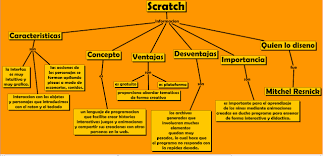

La lógica es la ciencia de las formas del pensamiento estudiadas desde el punto de vista de su estructura, la ciencia de las leyes que deben de observarse para obtener un conocimiento inferido. La lógica estudia también los procedimientos lógicos generales utilizados para el conocimiento de la realidad.